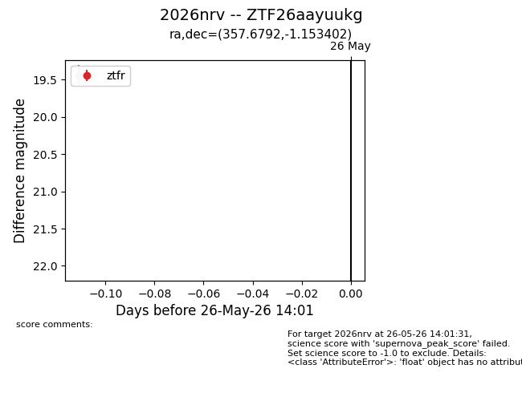
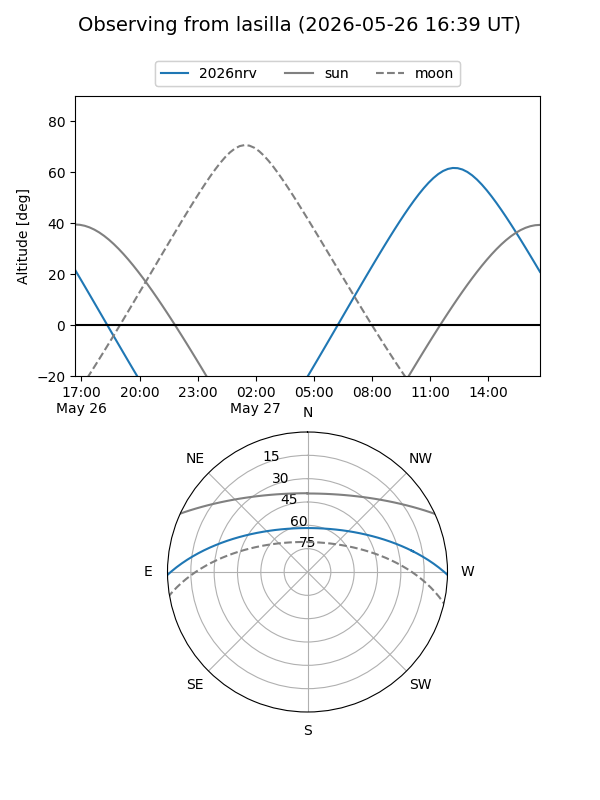
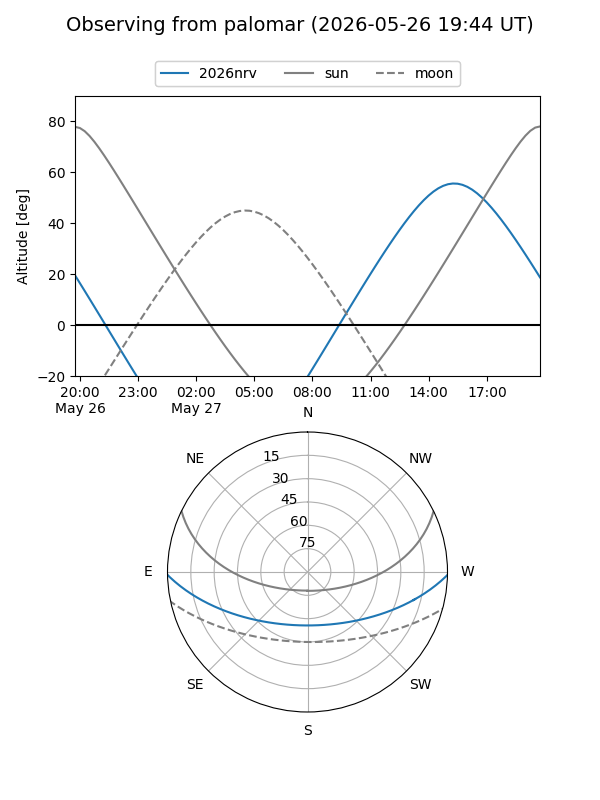

2026nrv
Target 2026nrv at 2026-05-26 14:05
Aliases and brokers:
lsst-FINK: link
lsst-Lasair: link
lsst-ALeRCE: link
ztf-FINK: link
ztf-Lasair: link
ztf-ALeRCE: link
TNS: link
YSE: link
alt names
ZTF26aayuukg (ztf,fink_ztf)
2026nrv (tns,yse)
Coordinates:
equatorial (ra, dec) = 357.6792,-1.15340
equatorial (HMS+DMS) = 23:50:43.02,-01:09:12.25
galactic (l, b) = (91.1212,-60.21992)
Flags:
TNS confirmed: nan
Photometry:
last ztfr=19.44
1 ztfr detections
Lightcurve

Visibility


Additional plots